Code
source("../_globals.r")DSAN 5000: Data Science and Analytics
Section 02
source("../_globals.r")cb_palette = ["#E69F00", "#56B4E9", "#009E73", "#F0E442", "#0072B2", "#D55E00", "#CC79A7"]
from IPython.display import Markdown
def disp(df, floatfmt='g', include_index=True):
return Markdown(
df.to_markdown(
floatfmt=floatfmt,
index=include_index
)
)
def summary_to_df(summary_obj, corner_col = ''):
reg_df = pd.DataFrame(summary_obj.tables[1].data)
reg_df.columns = reg_df.iloc[0]
reg_df = reg_df.iloc[1:].copy()
# Save index col
index_col = reg_df['']
# Drop for now, so it's all numeric
reg_df.drop(columns=[''], inplace=True)
reg_df = reg_df.apply(pd.to_numeric)
my_round = lambda x: round(x, 2)
reg_df = reg_df.apply(my_round)
numeric_cols = reg_df.columns
# Add index col back in
reg_df.insert(loc=0, column=corner_col, value=index_col)
# Sigh. Have to escape | characters?
reg_df.columns = [c.replace("|","\|") for c in reg_df.columns]
return reg_df\[ \DeclareMathOperator*{\argmax}{argmax} \DeclareMathOperator*{\argmin}{argmin} \newcommand{\bigexpect}[1]{\mathbb{E}\mkern-4mu \left[ #1 \right]} \newcommand{\definedas}{\overset{\text{defn}}{=}} \newcommand{\definedalign}{\overset{\phantom{\text{defn}}}{=}} \newcommand{\eqeventual}{\overset{\text{eventually}}{=}} \newcommand{\expect}[1]{\mathbb{E}[#1]} \newcommand{\expectsq}[1]{\mathbb{E}^2[#1]} \newcommand{\fw}[1]{\texttt{#1}} \newcommand{\given}{\mid} \newcommand{\green}[1]{\color{green}{#1}} \newcommand{\heads}{\outcome{heads}} \newcommand{\iqr}{\text{IQR}} \newcommand{\kl}{\text{KL}} \newcommand{\lik}{\mathcal{L}} \newcommand{\mle}{\textsf{ML}} \newcommand{\orange}[1]{\color{orange}{#1}} \newcommand{\outcome}[1]{\textsf{#1}} \newcommand{\param}[1]{{\color{purple} #1}} \newcommand{\paramDist}{\param{\boldsymbol\theta_\mathcal{D}}} \newcommand{\pgsamplespace}{\{\green{1},\green{2},\green{3},\purp{4},\purp{5},\purp{6}\}} \newcommand{\prob}[1]{P\left( #1 \right)} \newcommand{\purp}[1]{\color{purple}{#1}} \newcommand{\red}[1]{\color{red}#1} \newcommand{\spacecap}{\; \cap \;} \newcommand{\spacewedge}{\; \wedge \;} \newcommand{\tails}{\outcome{tails}} \newcommand{\Var}[1]{\text{Var}[#1]} \newcommand{\bigVar}[1]{\text{Var}\mkern-4mu \left[ #1 \right]} \]
Today’s Planned Schedule (Section 02):
| Start | End | Topic | Recording | |
|---|---|---|---|---|
| Lecture | 12:30pm | 1:30pm | DGPs for Clusters → | |
| 1:30pm | 2:00pm | K-Means Clustering → | ||
| Break! | 2:00pm | 2:10pm | ||
| Lab | 2:10pm | 2:40pm | DBSCAN and Hyperparameter Tuning → | |
| 2:40pm | 3:00pm | Student Presentation |
\[ h_i = \beta_0 + \beta_1 s_i + \varepsilon_i \]
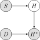
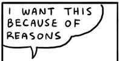
There are scarier alternatives, though! What if…
Dogs eat homework because their owner studied so much that the dog got ignored?
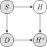
Dogs hate sloppy work, and eat bad homework that would have gotten a low score

Noisy homes (\(Z = 1\)) cause dogs to get agitated and eat homework more often, and students do worse

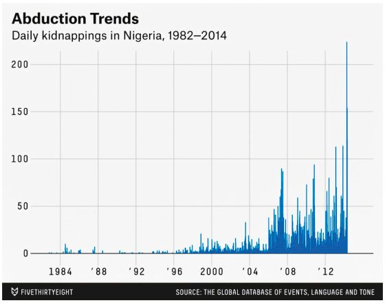
Presumed DGP:
Actual DGP:
library(tidyverse)
library(ggforce)
library(MASS)
library(patchwork)
N <- 50
Mu1 <- c(0.2, 0.8)
Mu2 <- c(0.8, 0.2)
sigma <- 1/24
# Data for concentric circles
circle_df <- tribble(
~x0, ~y0, ~r, ~Cluster, ~whichR,
Mu1[1], Mu1[2], sqrt(sigma), "C1", 1,
Mu2[1], Mu2[2], sqrt(sigma), "C2", 1,
Mu1[1], Mu1[2], 2 * sqrt(sigma), "C1", 2,
Mu2[1], Mu2[2], 2 * sqrt(sigma), "C2", 2,
Mu1[1], Mu1[2], 3 * sqrt(sigma), "C1", 3,
Mu2[1], Mu2[2], 3 * sqrt(sigma), "C2", 3
)
#print(circle_df)
Sigma <- matrix(c(sigma,0,0,sigma), nrow=2)
#print(Sigma)
x1_df <- as_tibble(mvrnorm(N, Mu1, Sigma))
x1_df <- x1_df |> mutate(
Cluster='C1'
)
x2_df <- as_tibble(mvrnorm(N, Mu2, Sigma))
x2_df <- x2_df |> mutate(
Cluster='C2'
)
cluster_df <- bind_rows(x1_df, x2_df)
cluster_df <- cluster_df |> rename(
x=V1, y=V2
)
known_plot <- ggplot(cluster_df) +
geom_point(
data = circle_df,
aes(x=x0, y=y0)
) +
geom_circle(
data = circle_df,
aes(x0=x0, y0=y0, r=r, fill=Cluster),
linewidth = g_linewidth,
alpha = 0.25
) +
geom_point(
data=cluster_df,
aes(x=x, y=y, fill=Cluster),
size = g_pointsize / 2,
shape = 21
) +
dsan_theme("full") +
coord_fixed() +
labs(
x = "x",
y = "y",
title = "Data with Known Clusters"
) +
scale_fill_manual(values=c(cbPalette[2], cbPalette[1], cbPalette[3], cbPalette[4])) +
scale_color_manual(values=c(cbPalette[1], cbPalette[2], cbPalette[3], cbPalette[4]))
unknown_plot <- ggplot(cluster_df) +
geom_point(
data=cluster_df,
aes(x=x, y=y),
size = g_pointsize / 2,
#shape = 21
) +
dsan_theme("full") +
coord_fixed() +
labs(
x = "x",
y = "y",
title = "Same Data with Unknown Clusters"
)
cluster_df |> write_csv("assets/cluster_data.csv")
known_plot + unknown_plot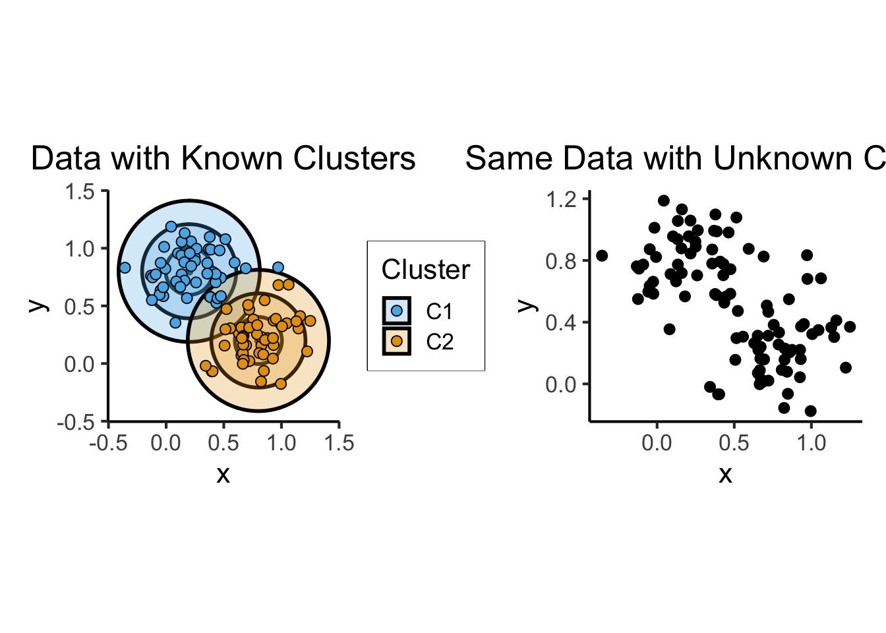


Probability that RV \(X_i\) takes on value \(\mathbf{v}\):
\[ \begin{align*} &\Pr(X_i = \mathbf{v} \mid \param{\boldsymbol\theta_\mathcal{D}}) = \varphi_2(\mathbf{v}; \param{\boldsymbol\mu}, \param{\mathbf{\Sigma}}) \end{align*} \]
where \(\varphi_2(\mathbf{v}; \boldsymbol\mu, \mathbf{\Sigma})\) is pdf of \(\boldsymbol{\mathcal{N}}_2(\boldsymbol\mu, \mathbf{\Sigma})\).
Let \(\mathbf{X} = (X_1, \ldots, X_N)\), \(\mathbf{V} = (\mathbf{v}_1, \ldots, \mathbf{v}_N)\)
Probability that RV \(\mathbf{X}\) takes on values \(\mathbf{V}\):
\[ \begin{align*} &\Pr(\mathbf{X} = \mathbf{V} \mid \param{\boldsymbol\theta_\mathcal{D}}) \\ &= \Pr(X_1 = \mathbf{v}_1 \mid \paramDist) \times \cdots \times \Pr(X_N = \mathbf{v}_N \mid \paramDist) \end{align*} \]
If only we had some sort of method for estimating which values of our unknown parameters \(\paramDist\) are most likely to produce our observed data \(\mathbf{X}\)
The diagram on the previous slide gave us an equation
\[ \begin{align*} \Pr(\mathbf{X} = \mathbf{V} \mid \param{\boldsymbol\theta_\mathcal{D}}) = \Pr(X_1 = \mathbf{v}_1 \mid \paramDist) \times \cdots \times \Pr(X_N = \mathbf{v}_N \mid \paramDist) \end{align*} \]
And we know that, when we consider the data as given and view this probability as a function of the parameters, we write it as
\[ \begin{align*} \lik(\mathbf{X} = \mathbf{V} \mid \param{\boldsymbol\theta_\mathcal{D}}) = \lik(X_1 = \mathbf{v}_1 \mid \paramDist) \times \cdots \times \lik(X_N = \mathbf{v}_N \mid \paramDist) \end{align*} \]
We want to find the most likely \(\paramDist\), that is, \(\boldsymbol\theta^*_\mathcal{D} = \argmax_{\paramDist}\mathcal{L}(\mathbf{X} = \mathbf{V} \mid \paramDist)\)
This value \(\boldsymbol\theta^*_\mathcal{D}\) is called the Maximum Likelihood Estimate of \(\paramDist\), and is easy to find using calculus tricks1
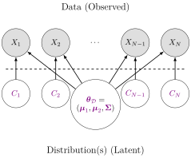
Probability \(X_i\) takes on value \(\mathbf{v}\):
\[ \begin{align*} &\Pr(X_i = \mathbf{v} \mid \param{C_i} = c_i; \; \param{\boldsymbol\theta_\mathcal{D}}) \\ &= \begin{cases} \varphi_2(v; \param{\boldsymbol\mu_1}, \param{\mathbf{\Sigma}}) &\text{if }c_i = 1 \\ \varphi_2(v; \param{\boldsymbol\mu_2}, \param{\mathbf{\Sigma}}) &\text{otherwise,} \end{cases} \end{align*} \]
where \(\varphi_2(v; \boldsymbol\mu, \mathbf{\Sigma})\) is pdf of \(\boldsymbol{\mathcal{N}}_2(\boldsymbol\mu, \mathbf{\Sigma})\).
Let \(\mathbf{C} = (\underbrace{C_1}_{\text{RV}}, \ldots, C_N)\), \(\mathbf{c} = (\underbrace{c_1}_{\mathclap{\text{scalar}}}, \ldots, c_N)\)
\[ \begin{align*} &\Pr(\mathbf{X} = \mathbf{V} \mid \param{\mathbf{C}} = \mathbf{c}; \; \param{\boldsymbol\theta_\mathcal{D}}) \\ &= \Pr(X_1 = \mathbf{v}_1 \mid \param{C_1} = c_1; \; \paramDist) \times \cdots \times \Pr(X_N = \mathbf{v}_N \mid \param{C_N} = c_N; \; \paramDist) \end{align*} \]
import pandas as pd
import numpy as np
import sklearn
sklearn.set_config(display = 'text')
from sklearn.mixture import GaussianMixture
cluster_df = pd.read_csv("assets/cluster_data.csv")
X = cluster_df[['x','y']].values
estimator = GaussianMixture(n_components=2, covariance_type="spherical", max_iter=20, random_state=5000);
estimator.fit(X);
y_pred = estimator.predict(X)
# Gather everything into a .csv
# The estimated means
mean_df = pd.DataFrame(estimator.means_).transpose()
mean_df.columns = ['x','y']
mean_df['Estimated Centroid'] = ['mu1','mu2']
mean_df['Estimated Cluster'] = ['E1', 'E2']
mean_df['Estimated Cluster Mapped'] = ['C1', 'C2']
cov_array = estimator.covariances_
sigma1 = np.sqrt(cov_array[0])
sigma2 = np.sqrt(cov_array[1])
mean_df['Estimated Sigma'] = [sigma1,sigma2]
mean_df['Estimated 2Sigma'] = [2*sigma1, 2*sigma2]
mean_df['Estimated 3Sigma'] = [3*sigma1, 3*sigma2]
mean_df.to_csv("assets/sklearn_mean_df.csv", index=False)
# The estimated covariance matrix
cov_df = pd.DataFrame({'c1': [1, cov_array[0]], 'c2': [cov_array[1], 1]})
cov_df.to_csv("assets/sklearn_cov_df.csv", index=False)
# And the predicted clusters
pred_df = pd.DataFrame({'Estimated Cluster': y_pred})
pred_df['Estimated Cluster'] = pred_df['Estimated Cluster'].apply(lambda x: 'E1' if x == 0 else 'E2')
pred_df['Estimated Cluster Mapped'] = pred_df['Estimated Cluster'].apply(lambda x: 'C1' if x == 'E1' else 'C2')
pred_df.to_csv("assets/sklearn_pred_df.csv", index=False)# Data for concentric circles
mean_df <- read_csv("assets/sklearn_mean_df.csv")
#print(mean_df)
cov_df <- read_csv("assets/sklearn_cov_df.csv")
#print(cov_df)
pred_df <- read_csv("assets/sklearn_pred_df.csv")
# Merge the predicted clusters into cluster_df
cluster_df <- bind_cols(cluster_df, pred_df)
cluster_df <- cluster_df |> mutate(
Correct = as.numeric(`Estimated Cluster Mapped` == Cluster)
)
correct_df <- cluster_df |> filter(Correct == 1)
incorrect_df <- cluster_df |> filter(Correct == 0)
#print(cluster_df)
# Keep only the 3*Sigma circle
# compare_circle_df <- circle_df |> filter(
# whichR == 3
# )
#print(mean_df)
#print(compare_circle_df)
compare_plot <- ggplot(cluster_df) +
geom_point(
data = mean_df,
aes(
x=x, y=y,
#fill=`Estimated Cluster`
)
) +
geom_point(
data = circle_df,
aes(
x=x0, y=y0,
#fill=Cluster
)
) +
geom_circle(
data = mean_df,
aes(
x0=x, y0=y,
r=`Estimated Sigma`,
color=`Estimated Cluster`
#fill=`Estimated Centroid`
),
linewidth = g_linewidth,
alpha = 0.25
) +
geom_circle(
data = mean_df,
aes(
x0=x, y0=y,
r=`Estimated 2Sigma`,
color=`Estimated Cluster`
#fill=`Estimated Centroid`
),
linewidth = g_linewidth,
alpha = 0.25
) +
geom_circle(
data = mean_df,
aes(
x0=x, y0=y,
r=`Estimated 3Sigma`,
color=`Estimated Cluster`
#fill=`Estimated Cluster`
),
linewidth = g_linewidth,
alpha = 0.25
) +
geom_circle(
data = circle_df,
aes(
x0=x0, y0=y0,
r=r,
color=Cluster
#fill=Cluster
),
linewidth = g_linewidth,
alpha = 0.25
) +
dsan_theme("full") +
coord_fixed() +
labs(
x = "x",
y = "y",
title = "DGP vs. Estimated Clusters",
fill = "MLE",
color = "MLE",
shape = "Correct?"
) +
scale_shape_manual(values = c(4,21)) +
scale_color_manual(values=c(cbPalette[2], cbPalette[1], cbPalette[3], cbPalette[4]))
compare_plot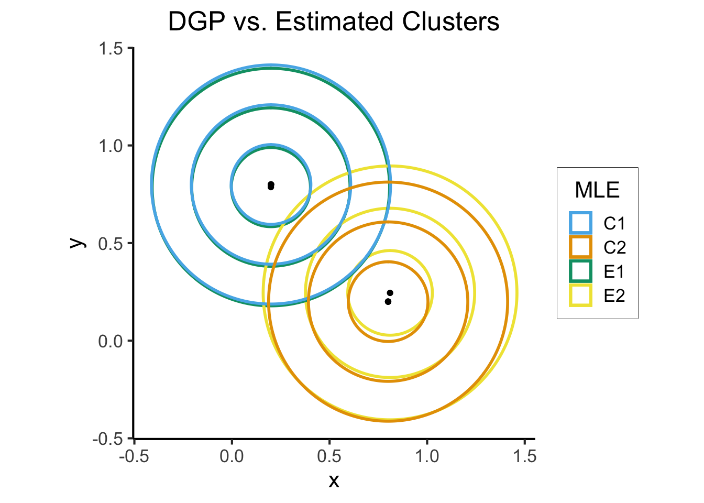
est_plot <- ggplot(cluster_df) +
# geom_point(
# data = mean_df,
# aes(x=x, y=y)
# ) +
geom_circle(
data = mean_df,
aes(
x0=x, y0=y,
r=`Estimated Sigma`,
fill=`Estimated Cluster Mapped`
),
linewidth = g_linewidth,
alpha = 0.25
) +
geom_circle(
data = mean_df,
aes(x0=x, y0=y, r=`Estimated 2Sigma`, fill=`Estimated Cluster Mapped`),
linewidth = g_linewidth,
alpha = 0.25
) +
geom_circle(
data = mean_df,
aes(x0=x, y0=y, r=`Estimated 3Sigma`, fill=`Estimated Cluster Mapped`),
linewidth = g_linewidth,
alpha = 0.25
) +
geom_point(
data=cluster_df,
aes(
x=x, y=y,
fill=factor(`Estimated Cluster Mapped`),
shape=factor(Correct)
),
size = g_pointsize / 2,
stroke = 0.75
) +
geom_point(
data=incorrect_df,
aes(x=x, y=y),
color='black',
shape = 4,
size = g_pointsize / 2,
stroke = 2
) +
geom_point(
data=incorrect_df,
aes(x=x, y=y),
color=cbPalette[4],
shape = 4,
size = g_pointsize / 2,
stroke = 0.8
) +
dsan_theme("full") +
coord_fixed() +
labs(
x = "x",
y = "y",
title = "Data with Estimated Clusters",
fill = "MLE",
color = "MLE",
shape = "Correct?"
) +
scale_shape_manual(values = c(4,21)) +
scale_fill_manual(values=c(cbPalette[3], cbPalette[4])) +
scale_color_manual(values=c(cbPalette[3], cbPalette[4]))
known_plot + est_plot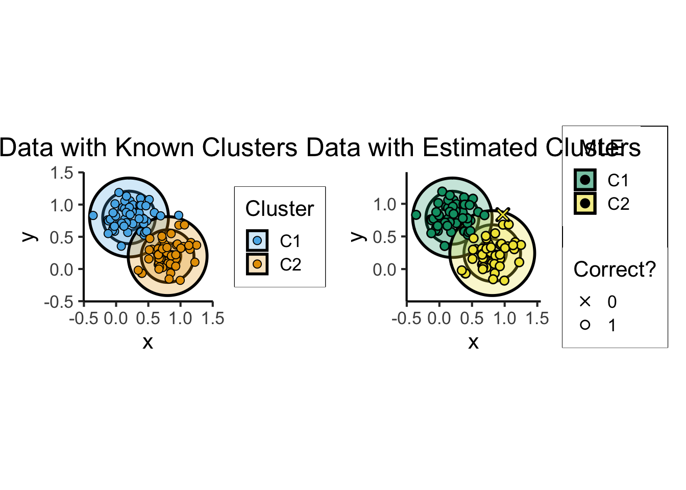
| Heuristic 1 | Heuristic 2 |
|---|---|
| Points in same cluster should be similar | Points in different clusters should be dissimilar |
You could take these two heuristics, formalize them, and derive the rest of lecture 😉
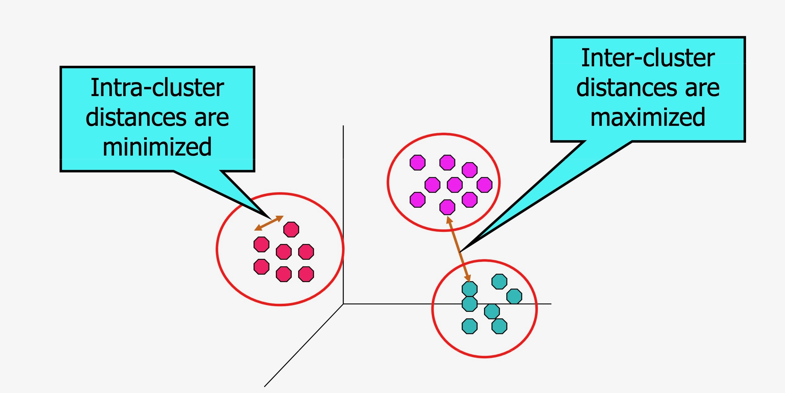

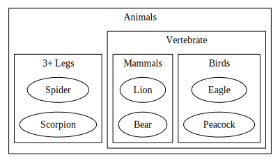
Image from Gelman (2009)
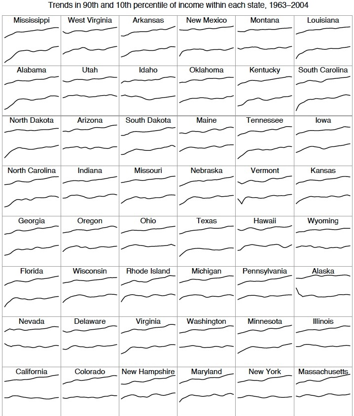

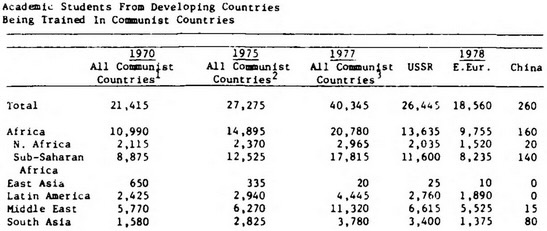
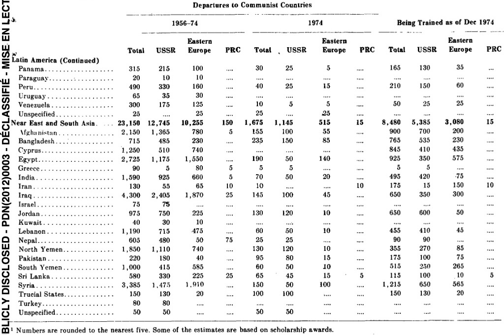
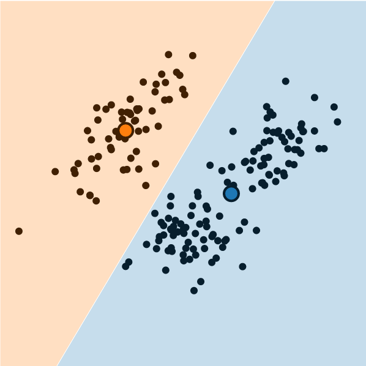
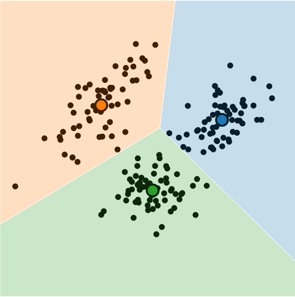
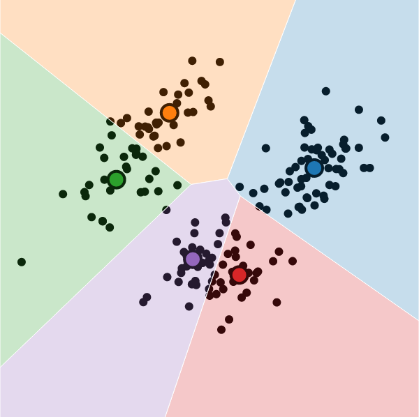
import pandas as pd
import matplotlib.colors
from sklearn.cluster import KMeans
cluster_df = pd.read_csv("assets/cluster_data.csv")
X = cluster_df[['x','y']].values
kmc_model = KMeans(
n_clusters=2,
init='k-means++',
verbose=0,
random_state=5000,
copy_x=True,
algorithm='lloyd'
);
kmc_model.fit(X);
y_pred_vals = kmc_model.predict(X)
y_pred_df = pd.DataFrame({'y_pred': y_pred_vals})
y_pred_df.to_csv("assets/kmc_preds.csv", index=False)
kmc_centroid_df = pd.DataFrame(kmc_model.cluster_centers_.transpose(), columns=['x','y'])
#disp(kmc_centroid_df)
kmc_centroid_df.to_csv("assets/kmc_centroids.csv", index=False)
import matplotlib.pyplot as plt
# Step size of the mesh. Decrease to increase the quality of the VQ.
h = 0.01 # point in the mesh [x_min, x_max]x[y_min, y_max].
# Plot the decision boundary. For that, we will assign a color to each
bpad = 0.05
x_min, x_max = X[:, 0].min() - bpad, X[:, 0].max() + bpad
y_min, y_max = X[:, 1].min() - bpad, X[:, 1].max() + bpad
xx, yy = np.meshgrid(np.arange(x_min, x_max, h), np.arange(y_min, y_max, h))
# Obtain labels for each point in mesh. Use last trained model.
Z = kmc_model.predict(np.c_[xx.ravel(), yy.ravel()])
# Put the result into a color plot
#custom_cmap = matplotlib.colors.LinearSegmentedColormap.from_list("", ["red","violet","blue"])
#custom_cmap = matplotlib.colors.ListedColormap(['white', 'red'])
#custom_cmap = matplotlib.colors.ListedColormap(cb_palette).reversed()
custom_cmap = matplotlib.colors.ListedColormap([cb_palette[0], cb_palette[2], cb_palette[1]])
Z = Z.reshape(xx.shape)
plt.figure(1)
plt.clf()
plt.imshow(
Z,
interpolation="nearest",
extent=(xx.min(), xx.max(), yy.min(), yy.max()),
#cmap=plt.cm.Paired,
cmap=custom_cmap,
aspect="auto",
origin="lower",
)
# And plot the points
plt.plot(X[:, 0], X[:, 1], "o", markersize=6, color='white', markerfacecolor='black', alpha=0.75)
# Plot the centroids as a white X
centroids = kmc_model.cluster_centers_
plt.scatter(
centroids[:, 0],
centroids[:, 1],
marker="*",
s=250,
linewidths=1.5,
color='white',
facecolor='black',
zorder=10,
)
# Plot gaussian means as... smth else
plt.scatter(
[0.2,0.8],
[0.8,0.2],
marker="*",
s=250,
linewidths=1.5,
color=cb_palette[3],
facecolor='black',
zorder=9,
)
plt.title(
"K-means clustering on the Gaussian mixture data"
)
plt.legend([
'Original Data',
'K-Means Centroids',
'True Centroids (DGP)'
])
#plt.xlim(x_min, x_max);
#plt.ylim(y_min, y_max);
#plt.xticks(());
#plt.yticks(());
plt.show()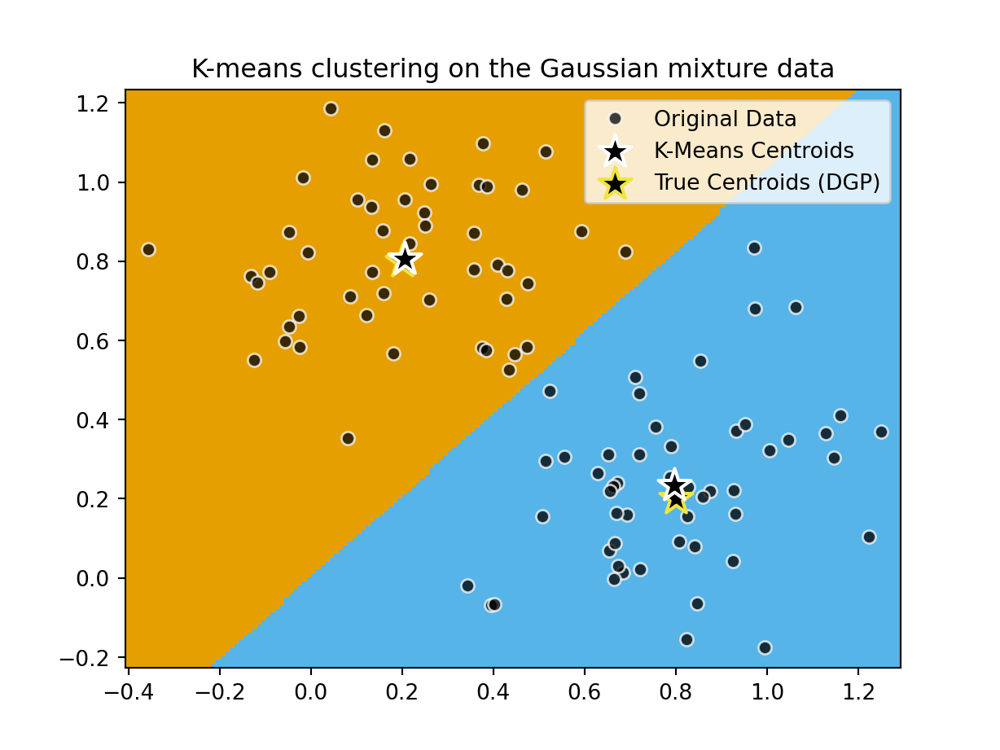
import time
import warnings
from itertools import cycle, islice
import matplotlib.pyplot as plt
import numpy as np
from sklearn import cluster, datasets, mixture
from sklearn.neighbors import kneighbors_graph
from sklearn.preprocessing import StandardScaler
# ============
# Generate datasets. We choose the size big enough to see the scalability
# of the algorithms, but not too big to avoid too long running times
# ============
n_samples = 500
seed = 30
noisy_circles = datasets.make_circles(
n_samples=n_samples, factor=0.5, noise=0.05, random_state=seed
)
noisy_moons = datasets.make_moons(n_samples=n_samples, noise=0.05, random_state=seed)
blobs = datasets.make_blobs(n_samples=n_samples, random_state=seed)
rng = np.random.RandomState(seed)
no_structure = rng.rand(n_samples, 2), None
# Anisotropicly distributed data
random_state = 170
X, y = datasets.make_blobs(n_samples=n_samples, random_state=random_state)
transformation = [[0.6, -0.6], [-0.4, 0.8]]
X_aniso = np.dot(X, transformation)
aniso = (X_aniso, y)
# blobs with varied variances
varied = datasets.make_blobs(
n_samples=n_samples, cluster_std=[1.0, 2.5, 0.5], random_state=random_state
)
# ============
# Set up cluster parameters
# ============
plt.figure(figsize=(9 * 2 + 3, 13))
plt.subplots_adjust(
left=0.02, right=0.98, bottom=0.001, top=0.95, wspace=0.05, hspace=0.01
)
plot_num = 1
default_base = {
"quantile": 0.3,
"eps": 0.3,
"damping": 0.9,
"preference": -200,
"n_neighbors": 3,
"n_clusters": 3,
"min_samples": 7,
"xi": 0.05,
"min_cluster_size": 0.1,
"allow_single_cluster": True,
"hdbscan_min_cluster_size": 15,
"hdbscan_min_samples": 3,
"random_state": 42,
}
datasets = [
(
noisy_circles,
{
"damping": 0.77,
"preference": -240,
"quantile": 0.2,
"n_clusters": 2,
"min_samples": 7,
"xi": 0.08,
},
),
(
noisy_moons,
{
"damping": 0.75,
"preference": -220,
"n_clusters": 2,
"min_samples": 7,
"xi": 0.1,
},
),
# (
# varied,
# {
# "eps": 0.18,
# "n_neighbors": 2,
# "min_samples": 7,
# "xi": 0.01,
# "min_cluster_size": 0.2,
# },
# ),
(
aniso,
{
"eps": 0.15,
"n_neighbors": 2,
"min_samples": 7,
"xi": 0.1,
"min_cluster_size": 0.2,
},
),
(blobs, {"min_samples": 7, "xi": 0.1, "min_cluster_size": 0.2}),
(no_structure, {}),
]
for i_dataset, (dataset, algo_params) in enumerate(datasets):
# update parameters with dataset-specific values
params = default_base.copy()
params.update(algo_params)
X, y = dataset
# normalize dataset for easier parameter selection
X = StandardScaler().fit_transform(X)
# estimate bandwidth for mean shift
bandwidth = cluster.estimate_bandwidth(X, quantile=params["quantile"])
# connectivity matrix for structured Ward
connectivity = kneighbors_graph(
X, n_neighbors=params["n_neighbors"], include_self=False
)
# make connectivity symmetric
connectivity = 0.5 * (connectivity + connectivity.T)
# ============
# Create cluster objects
# ============
two_means = cluster.MiniBatchKMeans(
n_clusters=params["n_clusters"],
n_init="auto",
random_state=params["random_state"],
)
# spectral = cluster.SpectralClustering(
# n_clusters=params["n_clusters"],
# eigen_solver="arpack",
# affinity="nearest_neighbors",
# random_state=params["random_state"],
# )
dbscan = cluster.DBSCAN(eps=params["eps"])
gmm = mixture.GaussianMixture(
n_components=params["n_clusters"],
covariance_type="full",
random_state=params["random_state"],
)
clustering_algorithms = (
("MiniBatch\nKMeans", two_means),
#("Affinity\nPropagation", affinity_propagation),
#("MeanShift", ms),
#("Spectral\nClustering", spectral),
#("Ward", ward),
#("Agglomerative\nClustering", average_linkage),
("DBSCAN", dbscan),
#("HDBSCAN", hdbscan),
#("OPTICS", optics),
#("BIRCH", birch),
("Gaussian\nMixture", gmm),
)
for name, algorithm in clustering_algorithms:
t0 = time.time()
# catch warnings related to kneighbors_graph
with warnings.catch_warnings():
warnings.filterwarnings(
"ignore",
message="the number of connected components of the "
+ "connectivity matrix is [0-9]{1,2}"
+ " > 1. Completing it to avoid stopping the tree early.",
category=UserWarning,
)
warnings.filterwarnings(
"ignore",
message="Graph is not fully connected, spectral embedding"
+ " may not work as expected.",
category=UserWarning,
)
algorithm.fit(X)
t1 = time.time()
if hasattr(algorithm, "labels_"):
y_pred = algorithm.labels_.astype(int)
else:
y_pred = algorithm.predict(X)
plt.subplot(len(datasets), len(clustering_algorithms), plot_num)
if i_dataset == 0:
plt.title(name, size=18)
colors = np.array(
list(
islice(
cycle(
[
"#377eb8",
"#ff7f00",
"#4daf4a",
"#f781bf",
"#a65628",
"#984ea3",
"#999999",
"#e41a1c",
"#dede00",
]
),
int(max(y_pred) + 1),
)
)
)
# add black color for outliers (if any)
colors = np.append(colors, ["#000000"])
plt.scatter(X[:, 0], X[:, 1], s=10, color=colors[y_pred])
plt.xlim(-2.5, 2.5)
plt.ylim(-2.5, 2.5)
plt.xticks(())
plt.yticks(())
plt.text(
0.99,
0.01,
("%.2fs" % (t1 - t0)).lstrip("0"),
transform=plt.gca().transAxes,
size=15,
horizontalalignment="right",
)
plot_num += 1
plt.show()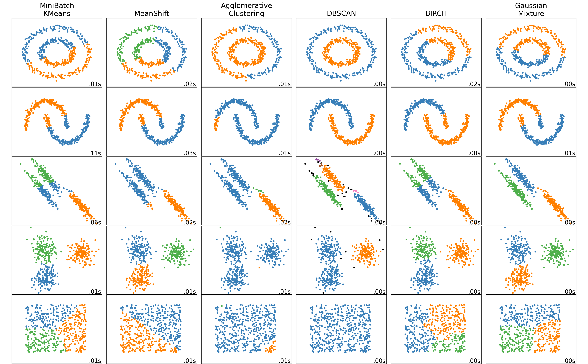

If you’re in my DSAN5100 class, then you already know this! If not, check out the MLE slides here for more details↩︎